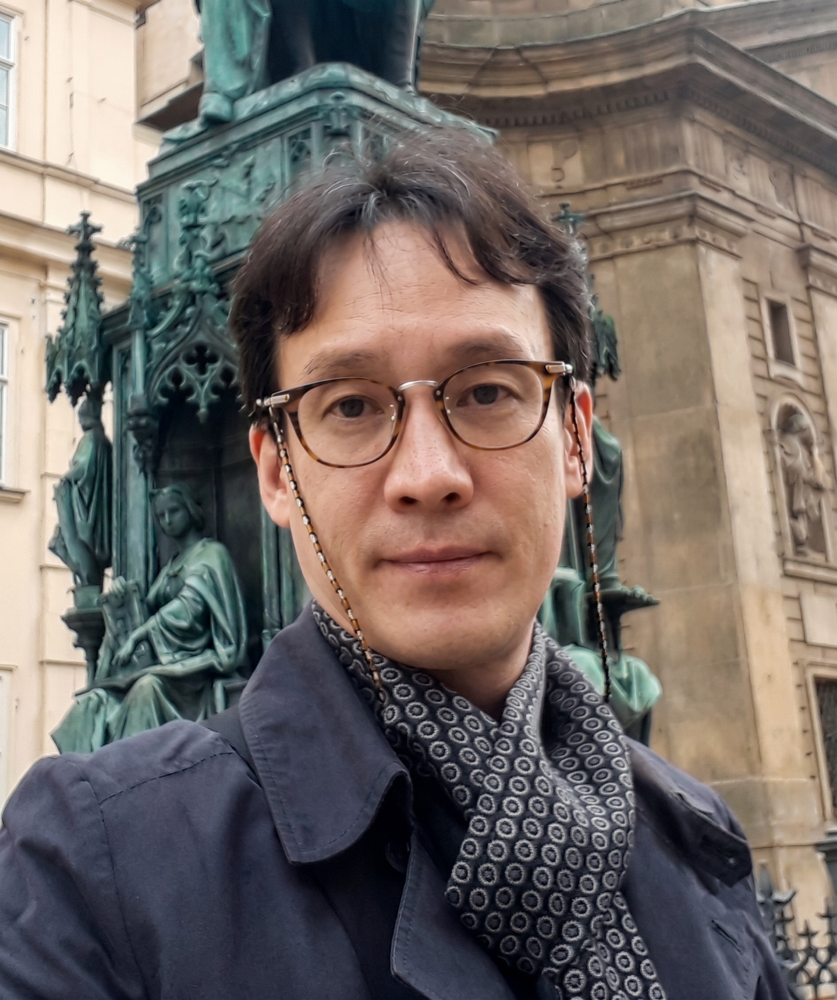

- Kwon Min Jhang's The Origin Series, Where Spirit and Matter Are Sutured
For a long time, Western abstraction was preoccupied with separating matter from spirit. Mark Rothko pushed his color fields toward the sublime of silence and erased any sense of materiality; Pierre Soulages, in the black matière of his "Outrenoir," reduced light to nothing but a reflection on the surface. One side evaporated matter; the other left only matter behind. Kwon Min Jhang's The Origin series marks a different point on this old fork in the road. His square canvases neither erase matter nor drag spirit down onto the surface. Instead, he designs the picture so that the two meet at a single point.
He inherits the meditative repetition of Korean Dansaekhwa. But where Dansaekhwa moved toward emptying out the traces of the act, Kwon fills those traces with the movement of light.
Standing before the work, it is the center that first holds the eye. At the middle of the square plane a round light spreads outward like a wave, and at its very center stands a sharp vertex that breaks through the surface. Up close, the surface is not flat. Paint pushed up by the fingertips piles into thick ridges, and fine lines cut between them. The light is not painted but built up and carved away. Layers of dominant color catch the light differently depending on the angle of view.
- Square and Circle: The Closed and the Open
The square is the ground of reality on which we stand. Closed off by straight lines and right angles, this form points to the order of the physical world. Within it, the pulsing circle opens another dimension—a form with no boundary, one that can be drawn inward to the center or spread outward without end. Kwon does not let the two collide; he makes them hold together in a single picture. The closed square and the open circle, the still and the moving, come into balance.
The moment one meets the light at the center, the viewer is briefly released from the noise outside the self. Setting down the gaze of others and borrowed desires, one stands before the old question, "Who am I?" This pause is not static. As Einstein observed, anything with mass bends the space-time around it. The person standing before the painting also carries the weight of a particular life, so the density of time that flows before the same painting differs from one viewer to the next. Some linger long; others pass quickly. The painting allows for that difference.
- Jidu Jeomyo: Movement Fixed by the Body
Kwon has abandoned the brush. Instead of a tool, he pushes the pigment up with his fingertips. He calls this method "Jidu Jeomyo" (指頭點描). The pulse and pressure of his fingertips become the very thickness of the paint, and as that thickness accumulates it forms the plane of yang (陽). He then digs into that plane with a sharp tool of his own making, carving the lines of yin (陰). Building up and carving away follow one after the other. Yin and yang interlock on a single surface.
This repetition is less a display of technique than a kind of practice. As he weaves the grain of light in undulating, circular motions toward the central vertex, the artist says he approaches a state of self-forgetting—of no-self (無我). The picture is the hardened trace of that time of absorption. Just as the lines incised into Neolithic comb-pattern pottery once did, the impulse of a pre-civilizational hand transcribing the order of the cosmos through the body is repeated here. Kwon believes that if you split matter all the way down, what remains is not fixed particles but only vibrating light and waves. That invisible vibration he holds onto, on the surface, through the marks of his fingertips.
- The Gate: The Downward-Facing Vertex
The clearest choice in this series is the direction the central vertex faces. This apex, rising through the square plane, points not up but down. The artist says it plainly: he could have turned the painting over so the vertex faced the sky. Instead, he lets the point obey gravity and come down—toward the ground he stands on.
The choice of direction is a choice of worldview. If the vertex points up, it becomes an ascent toward transcendence, a longing to leave reality behind. When it points down, the meaning is inverted. Energy descending from above passes through this point as if through a funnel and pours down onto the floor where the viewer now stands. The ideal does not float far away. It gathers underfoot.
Why downward? Because for Kwon, a human being is one who lives with both feet on the ground. The only place where we can recover ourselves and build the reality we want—however much we are shaken by the waves outside—is not in the void but on the ground we stand on now. The vertex is a compass pointing to that fact. The destination is not the sky but the viewer's feet. The proposal The Origin makes is, therefore, simple: do not leave; come down and take root.
Kwon's picture does not force a choice between the spiritual and the material. Square and circle, yang and yin, building up and carving away, above and below—it ties them all to a single point. That knot is the vertex at the center of the picture. The person who stands before it, rather than soaring far off, returns to the place where they stand. The light does not shine down from above; it is switched on again, underfoot.
I believe that what lies at the essence of being human is, in the end, light. As though pressing keys on a piano, I fill the canvas one by one with the resonance of my fingertips.
The light I want to paint is not some intangible, metaphysical illusion. I borrow the qualities of real light—the light we meet in everyday life. I do this because I believe that only then can anyone look comfortably into their own interior and feel a connection. And so my pictures converge on a circular light that is at once the simplest form and one that holds everything. The circle shows the simplicity of the source while also holding the quality of light that can spread endlessly in every direction.
The two axes that hold up my work are a question about human existence and a question about the light at its source. A childhood curiosity about light and color stayed vividly with me, and I set out in search of the origin of light. As I walked that path, I came to understand that any reflection on light has to travel alongside an inquiry into what it means to be human—because we are beings who live not in a cold vacuum but in a reality with a beating pulse.
At the center of every one of my pictures stands a single, sharply rising vertex. It is not a protrusion made by technique but a passage that connects the cold outer surface of reality with the warm inner world of the spirit. The real world and the ideal world can ultimately be restated as the layers of body and soul. Inner and outer, body and soul, reality and spirituality—when these two extremes are sutured together at the vertex in the center of the canvas, I believe a person can reach the principle of life they have so long sought, and fill the emptiness of existence.
I could have turned this vertex upside down so that it pointed to the high sky. But I let it obey gravity and point downward—to the ground I stand on. The destination the vertex points to is not the sky but the ground where I now stand, my own feet. As we live, we are shaken by countless waves from outside and often lose ourselves. Yet the place where we can break free of that noise, recover sovereignty over our lives, and build the reality we want is not in the void but here, on this solid ground. And so the vertex is my compass.
I set down the brush and work with paint on my fingertips. With my fingertips I push up thick grain to build the plane of yang, and with a sharp tool I made myself I dig into that plane to carve the lines of yin. As I build up and carve away, over and over, I feel a flutter of anticipation, my heart races, and at times I shed tears. Weaving the grain of light toward the center, at some point I forget myself. That time of absorption hardens, just as it is, onto the surface.
So that my work does not tip too far into metaphysics and become a mirage floating in the air, I always keep at the center the human being as one who lives in reality. From a place that is never cut off from the ground beneath my feet, my journey to find the beauty of a real source will not stop—as long as the strength in my fingertips allows.